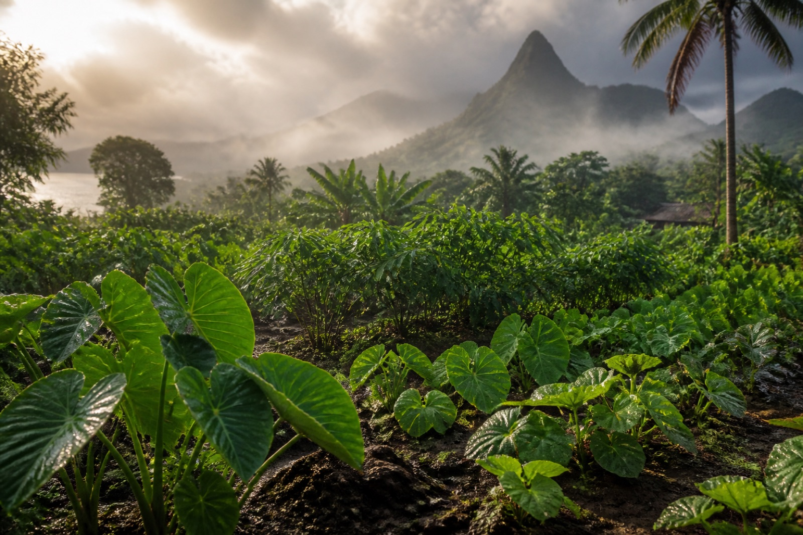
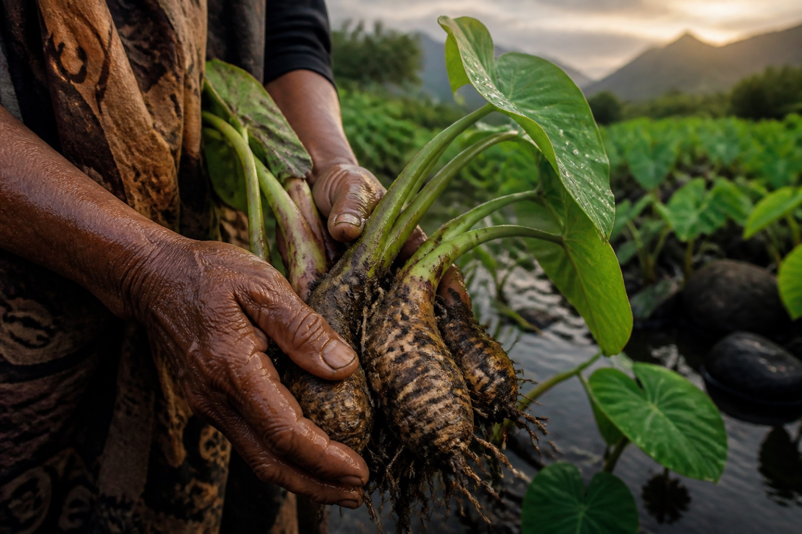
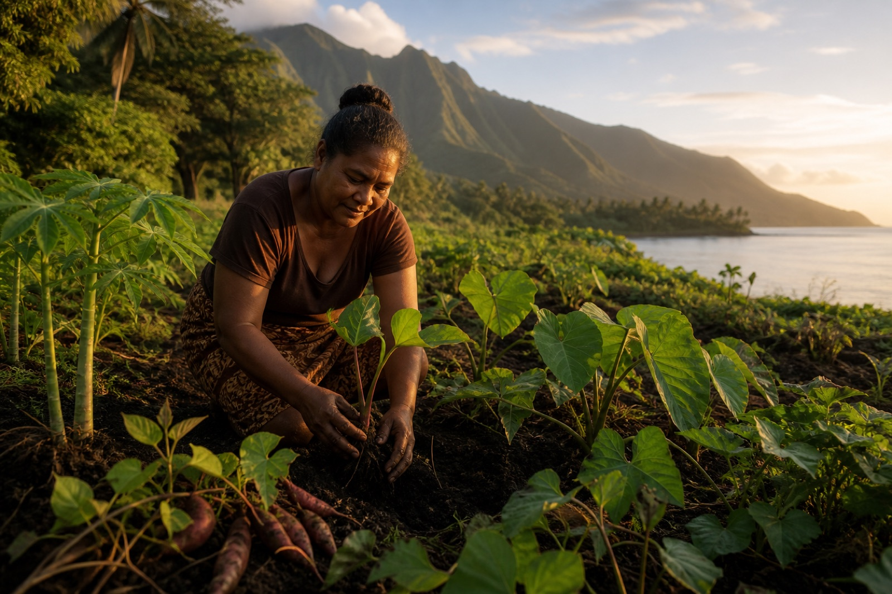

These dry years are real history, not projections — but they now land in a warmer climate. Hotter air raises evaporative demand, so the same dry spell can stress crops more. Resilience matters even where rainfall trends are uncertain.
Surface-temperature anomalies for the six countries in this stress test. Pacific Data Hub, SPC:DF_CLIMATE_CHANGE(1.0).
Plant your hectare
Can you climate-proof a garden?
Split one hectare between cassava, taro and sweet potato. Your mix carries through every test below.
This mix is now your garden for every test below.
Cassava33%
Taro33%
Sweet potato34%
Shares normalize automatically. Hypothetical hectare × real national yield histories — not an observed household garden.
First stress test
Tonga, 1987
Tonga’s driest year in this rainfall record. See each crop vs trend — and what your mix would have harvested.
Full backtest
Now against all 60 dry-year events
Ten driest years in each of six countries — sixty events, none hand-picked. The big number is your worst harvest across them.
One of those sixty tests was much worse than the rest.
The worst test
What does −36.7% actually look like?
Fiji · 1992
In the worst historical stress test for the equal-third hectare, expected harvest was about 9.16 tonnes.
The historical crop outcomes imply about 5.79 tonnes.
3.37 tonnes short
≈ 3,365 kg per hectare · hypothetical equal-third hectare
Implied harvest versus a fitted benchmark — not an observed household garden, and not a claim that drought caused this exact tonne loss.
That is the physical shock.
But what was it worth?
From tonnes to dollars
Can we put a dollar figure on Fiji 1992?
Not honestly.
Complete producer prices for all three crops are not available for that stress year.
So we keep the worst physical year in tonnes — and move to the years we can price consistently.
We price only the years where all three producer prices are observed.
Now put a price on the bet
One hectare. Same dry year. Four bets.
Fiji · 2004
Each strategy faces the same historical year. Only the crop allocation changes.
If you knew the winner beforehand, one crop would be enough.
But you don't.
The worst priced diversified year
Fiji 2006: about US$541 below benchmark.
Among the 10 dry stress events for which all three producer prices were available, this was the largest percentage downside for the equal-third diversified hectare.
One year tells us what the loss can look like.
What happens across every stress event we can price?
Price-covered stress test
Diversification didn't win every year.
Ten dry years. Same question. Did diversification make losing less costly?
It reduced the average downside.
Across the 10 price-covered dry stress events, average farm-gate-value downside was 6.6% under an equal-probability single-crop benchmark and 3.1% for the equal-third diversified hectare.
Price coverage is limited to 10 events in Fiji and New Caledonia. Treat this economic result as exploratory.
Lower average downside is a risk principle — not a universal planting recipe.
Local, not universal
The same mix does not hedge every island the same way.
The historical data support diversification as a risk-management principle. They do not prescribe one Pacific crop mix.
Different crops move together differently across countries, and national harvested-area patterns also differ. Principle ≠ prescription.

In 56 of 60 selected dry country-years, at least one national crop series stayed at or above its fitted trend.
Different crops do not always struggle together.
Hover or tap the image to unveil the number
More than yield
A garden can be statistically resilient and still fail its community
Yield is only one dimension of resilience. In Pacific communities, crop choices can also carry cultural, ceremonial, exchange, labour, taste and place-based significance that tonnes alone cannot capture. In places including Samoa and Fiji, taro also carries important ceremonial and exchange value.

Crop as more than yield — dignity in the harvest.

Planting options forward.
There is no climate-proof crop.
There may not even be a climate-proof garden.
Diversity gives a garden more ways to absorb uncertainty.
Fund the test before funding the prescription.
Preserve the planting material.
Run the local trials.
Measure yield, labour, income, nutrition and food security.
Let communities determine what works where they are.
Examples of relevant climate-resilience infrastructure and investment — not validation of the exact cassava+taro+sweet-potato portfolio analysed here:
US$42M
GCF FP295 — regenerative agriculture in Tonga, Vanuatu & Samoa
NZ$10M
CePaCT genebank — drought- and cyclone-ready varieties
Optional technical depth. These tools sit outside the main story — they do not prescribe a Pacific planting mix.
Full-record national yield correlations
Correlation describes whether the detrended national yield series tend to move together. It is not a causal drought-response coefficient.
Strategy worst-case comparison & sensitivity
Capping anomalies at ±50% checks whether a few extreme crop-year observations drive the lower-tail conclusion. The broad pattern does not disappear under the cap — that is a robustness check, not proof.
Worst-year harvest % — shorter bars (less severe) are better. Click a row to apply that mix.
231-garden risk / return frontier
In-sample historical optimisation. Not a planting recommendation. Never “the optimal Pacific garden.”
Click a point to try that mix in your garden and jump to the 60-event backtest.
The winner keeps changing (60-event heatmap)
Across 60 unusually dry country-years, no root stays on top. Which crop you would have wanted depends on the place and the year — information you only learn after the shock.
Hover or tap a tile — or a crop label — to explore.
They usually didn’t all fall together (56 / 60)
56 / 60
At least one crop series at/above trend
Only 4 / 60 had all three below fitted trend together. This is a national crop-series result — not a claim that every household garden followed the same pattern.
At least one at/above trendAll three below fitted trend
Physical downside tails by strategy
The same 60 dry stress events applied to each strategy. Look at how far the worst harvest losses stretch. Diversification isn’t trying to pick the winner — it’s trying to make the loser hurt less.
Hover or tap one event to compare the same country-year across all four strategies.
Bootstrap evidence (price-covered sample)
Event-level bootstrap support for a small price-covered sample — not causal or Pacific-wide inference.